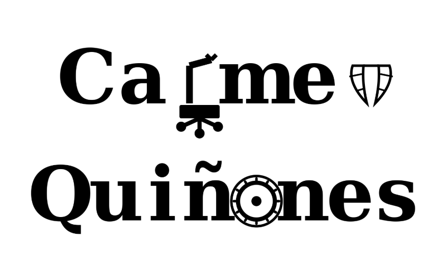
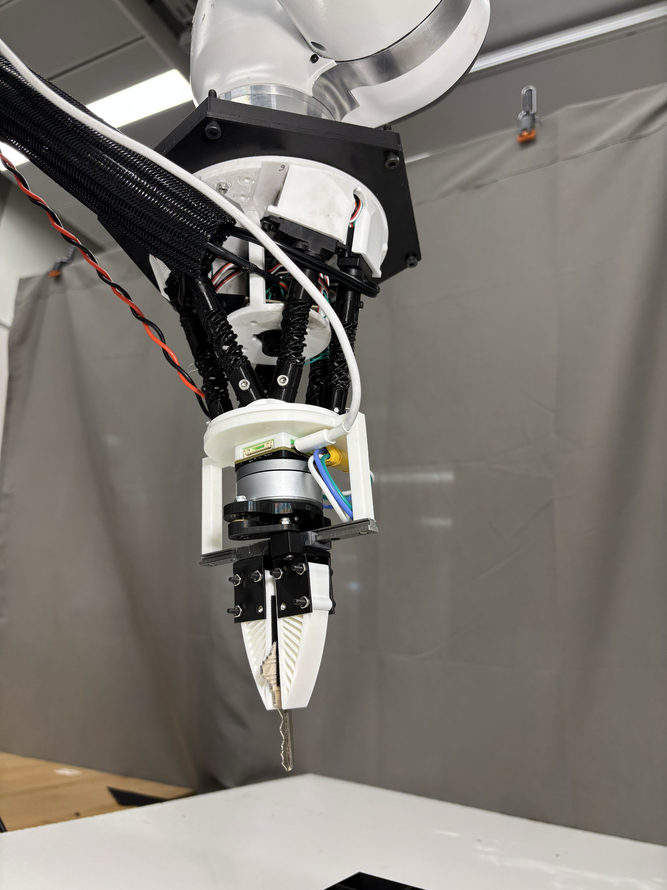

Robotic Gripper
The gripper picking up and releasing a rubber duck during a live test.

At Northwestern's McCormick School School of Engineering I designed and fabricated a specialized robotic gripper integrated with custom sensors. This was for a key-in-lock research project to teach advanced robotic machine learning models to open a lock. The gripper acts as a hand would in the process allowing the robot to pick and place a key in a lock.

In a design group we engineered a rocker-bogie suspension mars rover named 'Murder She Rover'. It is able to traverse rough terrain with minimal body vibration, integrating a 4-DOF robotic arm with a gripper, R/C-controlled through Arduino and dual 45A RoboClaw motor controllers.

I co-designed and fabricated a custom belt-drive transmission housed in a laser cut acrylic gearbox. This was done for a design competition testing maximum power transfer and efficiency with a $200 budget of which our team placed 4th overall.

Take a look at each project running!
The gripper picking up and releasing a rubber duck during a live test.
The rover traversing rough terrain with its arm in motion.
The rover picking up a ball with its arm.
The belt-drive transmission transferring power through the gearbox.
Outside of projects and coursework, I stay involved in teaching, student government, and community organizations across campus.
Vice President & Treasurer, managing club finances and budgeting, and securing over $15,000 in grants and sponsorships for cultural and community programs.
Active member of the Society of Women Engineers, supporting community and professional development for women in engineering at Caltech.
Instructed over 30 students in Caltech's ME13/113 precision metalworking course, guiding the full machining process from drawing interpretation to fabrication.
Serve as Director of Operations for the Associated Students of Caltech, overseeing Corporation property and liaising with student organizations campus-wide.